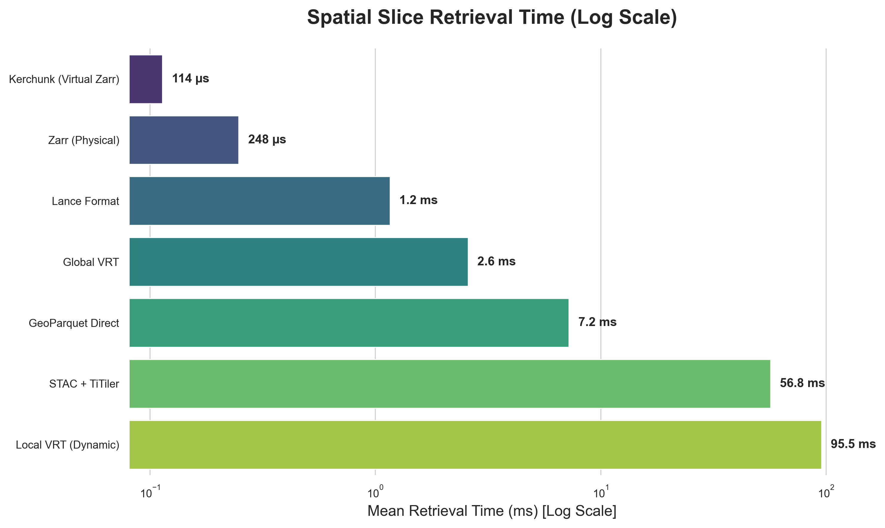

When dealing with massive geospatial datasets—like global 30m resolution DEMs or climate hazard models spanning multiple scenarios and decades—data providers naturally partition their rasters into thousands or millions of Cloud Optimized GeoTIFFs (COGs).
The classic GDAL ecosystem approach to querying across these partitioned files is to build a Virtual Raster (VRT). A VRT is essentially an XML file that maps a spatial grid to the underlying COGs. You open the VRT in rasterio or gdal, give it a bounding box, and it figures out which files to read.
But there's a fatal flaw when scaling this to the globe: VRTs are giant XML files.
If you have 10 million COGs, your VRT becomes a multi-gigabyte XML file. When your Python worker tries to open it to read a single bounding box, it must parse that entire XML structure into memory. This leads to massive RAM spikes, high latency, and eventual OOM (Out of Memory) crashes.
If Global VRTs won't scale, how do we query a massive collection of COGs efficiently? We benchmarked 5 alternative architectures against the traditional Global VRT:
/vsimem/ VRT at query time.rasterio, and use rasterio.merge to mosaic them in memory.fsspec's ReferenceFileSystem and xarray/zarr, treating the original COGs as a single Zarr array without moving any data.FixedSizeListArrays alongside WKB geometries. Lance provides $O(1)$ random access, avoiding the decompression of entire row groups.We built a Python harness using pytest-benchmark to test these 6 architectures. The task: retrieve a spatial slice intersecting 4 mock COGs out of a grid.
Here are the empirical wall-clock results running our python harness:

---------------------------------------------------------------------------------------------------------------------------
Name (time in us) Min Max Mean StdDev Rounds
---------------------------------------------------------------------------------------------------------------------------
test_bench_kerchunk 106.1669 155.5410 113.6704 8.3523 164
test_bench_zarr 222.5830 622.0831 247.8913 40.5741 97
test_bench_lance 815.3339 2365.5839 1162.5090 348.1033 60
test_bench_global_vrt 2482.9170 2789.8330 2579.0237 53.8033 121
test_bench_geoparquet_direct 6942.8330 7975.9581 7235.8643 239.7084 101
test_bench_titiler 53447.7500 59086.5840 56802.7672 1504.1333 17
test_bench_local_vrt 94853.6251 96684.6250 95457.9406 667.1794 7
---------------------------------------------------------------------------------------------------------------------------
/vsimem/ and rebuilding the GDAL dataset at runtime takes nearly 100ms. It's safe on memory, but terrible for latency.After assessing the performance and operational overhead of all approaches, a clear winner emerges for serving "busy tiles" in production.
While "virtual" zero-copy references (like Kerchunk or VirtualiZarr) are incredibly fast, they introduce brittle dependencies on external HTTP servers and require managing complex, large-scale Parquet indices alongside the raw COGs.
Instead, the most robust and performant architecture is to physically rewrite the COGs into Zarr v3 Sharded Archives (which can be done in parallel at lightning speeds using tools like tensorstore or Rust's zarrs).
Once the data is physically packaged as a native Zarr v3 archive, we can completely bypass slow backend Python tile servers. By hosting the Zarr archive directly on a static cloud bucket (like S3) and using zarr-layer with MapLibre on the frontend, the browser will dynamically fetch the binary chunks it needs and render them instantly on the GPU via client-side rendering.
This architecture eliminates the VRT bottleneck, removes the need for expensive backend tile servers, and provides the absolute lowest latency for interactive web maps.